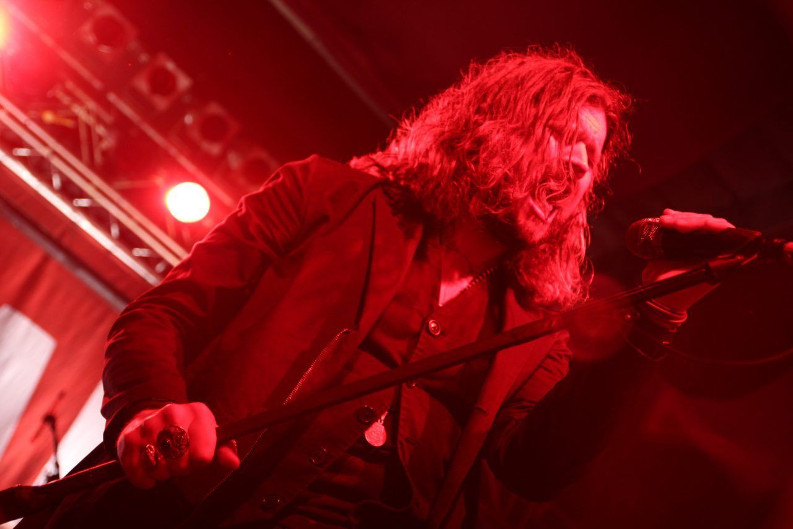
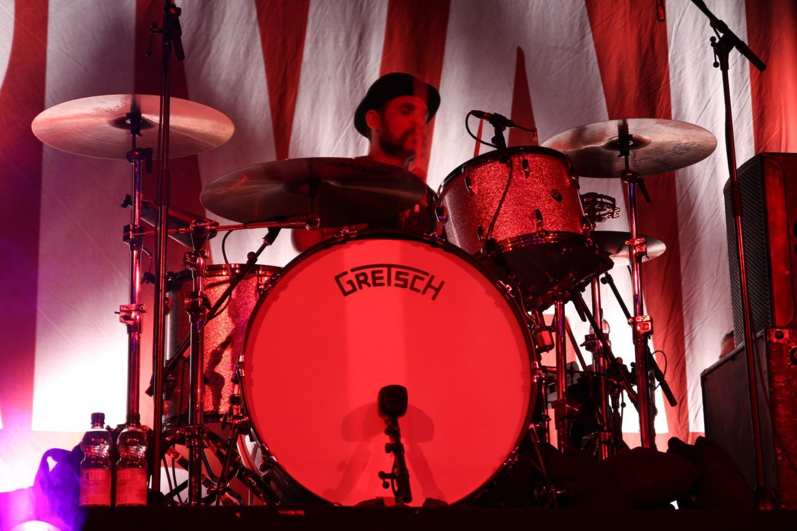
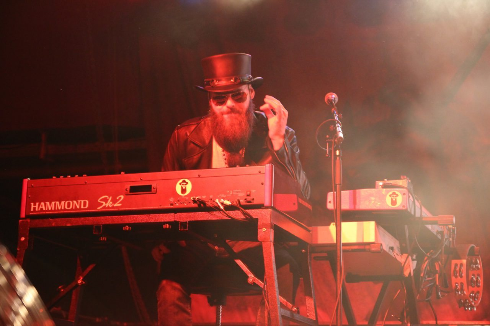
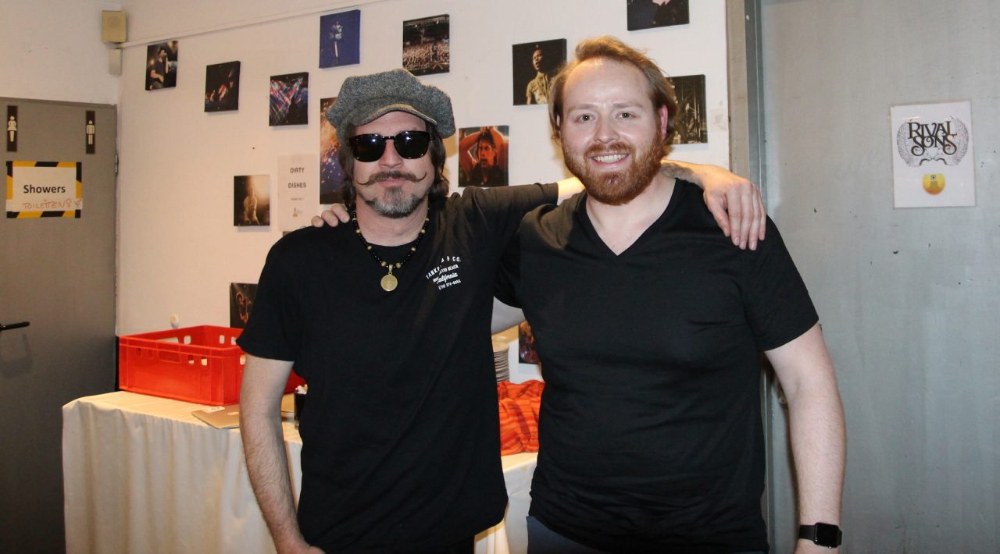

Enjoy the taste of crow - an interview with Scott Holiday of the Rival Sons

Scott Holiday and the Taste of Crow
I caught up with rock band Rival Sons while on tour in Europe to get a sense of life on the road, the creative spirit of the band, and where they are headed next with their music. Guitarist Scott Holiday sat down with me for an interview backstage on February 21, 2017 in Cologne Germany.
Scott tells me some hilarious stories from touring with Black Sabbath, and opens up his heart about the pain of being away from family while on the road. But above all, we get some insights for how Rival Sons is teaching that rock how to roll eight years on.
How is the tour going? Where are you all at right now?
Scott Holiday: The tour is going great. As far as where we are on the map, we’re in Cologne. We just came from Berlin last night and I think we’re about 2 weeks into this one. We have about 2 more weeks to go before we go home. It’s called the Teatro Fiasco.
We decided to do something different than we’ve ever done, different than I’ve ever seen to be honest especially with a rock ‘n roll band, but what we put together with me and our friend, Howie Pyro, who has a radio show at home called Intoxica Radio. And when he does it live, it’s Intoxica Radio Live. He only brings very, very rare 45’s and he spins garage and soul, funk and every—his rule is everything has to make people want to dance, when he does it live, that’s what it is. Howie is of the indie generation and he was in dancing and he’s a legend unto himself. That’s Howie Pyro. He’s great.
After this, we bring out our friend Derrick Brown. He’s a published poet at home. He is the owner and president of Write Bloody Publishing, which is a publishing company for poets.
It was a really audacious idea that we had to bring this poet out and set the night up like this, but it’s gone over swimmingly. And you can see people being offended. That’s usually my favorite part when people are caught off-guard and the jeers. There are those who come upstage and say like, “I don’t know. I felt—I don’t know if they got it, and I felt the most emotionally connected to those moments.” That’s what’s supposed to happen. We’re supposed to catch you off-guard. People are supposed to think, “What the fuck is this? Why are they doing this? I don’t know how I feel about this.” And then you go home with it and you realize a few days later, “Holy shit! I think I really loved that art!”
It makes people feel things and that’s the idea. If we don’t spur ourselves and poke ourselves, then our artistic nerves are just becoming complacent and nothing cool about complacency.

Tell us a little bit about your flavor of rock ‘n roll. Where is this coming from?
Scott Holiday: Well, the band is going to be a hybrid of the personalities involved in making it. [We are] very eclectic personalities that like all sorts of music. Mostly, you will probably hear us not listening to rock ‘n roll. We’ve been listening to the newest Anderson Paak record, which is fantastic. We listen to a lot of hip-hop. We listen to a lot of old soul, a lot of funk. I’ve listened the shit out of rock ‘n roll and I still love rock ‘n roll. But our music is an amalgamation of our joys and consciously knowing that we are a rock ‘n roll band. So, yeah, you have a lot of elements that aren’t rock ‘n roll in a rock ‘n roll situation. How do you explain anything like that?
And it’s also very traditional and very torch-bearing in a way that we know. Rock ‘n roll has seemed to—I think now it’s just re-sprouting. But when we started the band even before I met the guys when I was looking for everybody, I felt rock ‘n roll had become very complacent with itself and it felt horrible and, of course, it was never going to die or go away, but I just felt like The Blues Brothers being on a mission from God.
Further Reading: Posters from Concerts I Promoted
We have a responsibility to do it the way that we believe and want to see it done, a dirty rock ‘n roll band. We’ve always said a quote, “It seemed like rock forgot to roll. It’s like rock forgot to dance.” It forgot its boogie. It forgot what it was all about and I just wanted to make something that I will be proud of and feel like it’s encompassing these elements. It’s dirty. It’s very bluesy. It’s country and western, a lot of R&B, funk and a lot of soul. That’s what rock ‘n roll is. I think the great amalgamation of all these styles.
We know what country and western is and we know what the blues is, but rock ‘n roll was a little bit all of those things and our band is a little bit all those things as well.
You famously record all of your studio albums on-the-fly, with no preparation or writing prior to entering the studio. Considering the short timespan, how do you get so much creativity into such a short span and still keep up such a high standard of quality of music?
Scott Holiday: I don’t know how to really prepare it. I think it’s just what we are, the animal that we are. The guys in the group were hungry and it takes a long time between records even though we’re doing one every year. We’re playing a lot of live shows all year long. We stay on the road quite a bit and that inspires creation. It also makes you get sick of the old material, not in a way that you’re not going to play well or you don’t want to play it, but in the way that you want new material and you want to expand your catalogue and you want to do new things and you realize—you see your own patterns. You see how you’ve been doing things and where you want to take them.
So I think we get inspired that way from playing so much.
The key for me is to not finish anything. That sounds lazy but it’s quite the opposite. It’s a hard thing to not finish a song as a writer, but if I leave it open, then I don’t think I’m married to it and then when we get creative together, I’m allowing people to doctor it; add things or subtract things and that’s how we have to create. Otherwise, you get very married to something and then somebody wants to change one little thing and you’re like, “Jesus, what is your fucking problem? Don’t you see the masterpiece I made?” So, I don’t make any masterpieces. I write little bits and then we all work together.
It could go horribly wrong. We could have nothing in 3 weeks, but for some reason, it worked out. We also are a big fan of killing our darlings, you know. Nothing is precious. We kill songs constantly in the studio. We write much more than anybody hears and as soon as something feels like it’s got a nail in the tire, we just go move on to something else.

So how did the formation of Rival Sons happen, with such an eclectic group, that everybody said, “Oh, yeah, this makes sense. Let’s do this.” How do you explain that?
Scott Holiday: I basically gave my mission statement in my pitch one by one to these guys—and each of these guys have their own mission statement on what they want to do with their art and their music—and it just seemed to be we had a common ground that we all wanted to do this rock ‘n roll and we are all connected with each other’s personality to a certain degree. Me and Jay really connected about old blues and how it seems to have been removed from modern rock ‘n roll and that that was a mistake and that’s a travesty. We like to have rock ‘n roll where it was.
When we work together, the proof in the pudding is in the taste so that’s really why it worked out. We played together and it just felt like we’re going to do this. There’s no way we weren’t going to do it and it was apparent the first time we played together, it was very strange. You can repel it as much as you want, but it’s like falling in love with a woman. You could say I don’t want to fall in love. I don’t want to meet anybody. But all of a sudden you go to the coffee shop and you’re sitting down with this woman who sits with you and you think, “Holy shit! I think I’m immediately in love with this woman, like there is something cosmic happening.”
So, being in a band is very much like a marriage. Artists are very much like that. It’s a really deep connection. You just feel it with some people and you don’t with others.
During your time on the road, do you get homesick? How do you cope with all the time on the road or being away from friends and family?
Scott Holiday: Yeah, I have 2 kids. It’s miserable. It’s horrible. It’s fucking excruciating and it’s no place for a family man on the road. It’s horrible. I already ended a marriage last year because of it. It’s very difficult. My advice about that would be be careful what you wish for. I’ve worked on this since I was a kid and ended up having a family in the interim and it all kind of came to me the way it is now after I had my family and it’s shitty to be away from home. And we all are dads and that is the difficult thing on the road. We love our job and we can’t stop doing the job because the job keeps the family alive and we could not be happy without the job. But it’s the worst part of the job for sure. There’s no bright side. I know this is a dark answer, but it’s the truth. There’s no bright side to it. It sucks. It fucking sucks. We all hate it.
But, the kids understand and luckily in this day and age, we have Skype and Facetime. You can only imagine in the ‘60s and ‘70s up until now, those guys didn’t even have cell phones. You had to find a successful landline just to hope to reach them because they’re on the line. It must have been so sad.
So, that’s how we cope with it. We talk. I talk to my children every day. I write them every single day. I send them pictures. They send me pictures. We Facetime and we’re still close. They still cry and it doesn’t really satisfy the whole, but it is what it is. I’m sure there’s dads in military families and it kills them too. But you know what, we’re men and this is what how men survive their family, how they like to take care of them. My children understand that.
We’re good—we’re all really family-oriented, more than probably any band maybe that you’ve ever met. We’re really, really close like family and we all take care of each other and that’s how you cope too.
What advice can you give to anybody starting out on the the rockstar journey?
Scott Holiday: My main advice for people starting out is learn to enjoy the taste of crow. If you wanted to survive and do music for a living, learn to enjoy the taste of crow. It means, learn to enjoy being poor, get comfortable with it because that’s mostly what we are.
The happiness isn’t going to come from fame or money. The happiness is going to come from the feeling it gives you, the achievement you make like with the breakthrough with the art, with the expression, with how you’re connected to your instrument or your writing or your painting, your sculpting or your building or whatever. The joy will be from the accomplishment inside of itself, not from the pay.
It’s almost weird for the band when you think about it. It’s almost kind of gross, like it’s such a pure thing that I came up with and now I have to deal with lawyers and money about it. Do music because you love it. I know that sounds generic. Do art because you love it. Because you can’t not do it. Because it’s what you’re supposed to do. And enjoy the taste of crow.

Do you have any anecdote you want to share or moment of inspiration, words of wisdom that were passed on to you and you can pass on to others?
Scott Holiday: We toured with Black Sabbath for 13 months and we often shared the same hotels as them. I remember I could hear like 2 doors down from me, it sounded like somebody was listening to the Osbourne TV show too loud on the TV. Sharon and Ozzy were in there and the kids had dropped by too. He was going, “Sharon, turn down the T.V.” And she’s going, “Ozzy, no!” You can just hear them doing it, like holy shit. They’re right there! I just looked outside the door and thought, “Oh, my God! This is unbelievable. I can’t believe we’re doing this. This tour is going to be great.”
It was just a surreal thing. It all just underscored the importance of authenticity.
How has your music evolved over time? Do you get a sense for that evolution day by day? Or do you not really know what it’s going to evolve into until you get in the studio the next time?
Scott Holiday: If I was going into the studio tomorrow, I wouldn’t know until I was in there tomorrow. Even today I couldn’t tell you. There’s several ideas that we all want to pull in and that we talk about that we’re going to pull in, but you’re never really sure how that’s going to manifest when you get in there.
We went in there and said, “Yeah, we want this like steady, up-tempoed, groovy record.” We can get in there and start striking and hitting at that and then immediately go, “This sucks. This sounds like shit right now. It’s like feeling forced and it’s not real. Let’s loosen up and try something else.”
So it’s very organic in that way. It has to be—it’s very honest in that way. You can’t force a record. You can’t bullshit each other and you can’t bullshit the listener. It has to be a real thing for us because, otherwise, it’ll never—it’ll never really come out. That’s for sure. It will never get off, like I said we’re killing our darlings. So, if we’re in there forcing shit, we can hear it real, real quick. We’re looking for the nugget, the magic where we impress ourselves or somebody’s performance is blowing us away. If there’s something forced, we’re likely to delete it. “I don’t fucking want to hear that ever again in my life, delete that right now.”
Is there anything else you want to add?
Scott Holiday: If anybody reading this is a fan, thank you. Thank you, thank you. We’re so thankful that we could come back and do this all over the world and it’s because we have great fans that support us. So thank you.

Thank you, Scott.
A big “thank you” to Scott and the whole Rival Sons crew for taking the time to participate in this interview. So how about you? Do you love the taste of crow? What road do you travel? Please leave me a comment below, or connect with me directly at @JudsonLMoore. Travel safely!